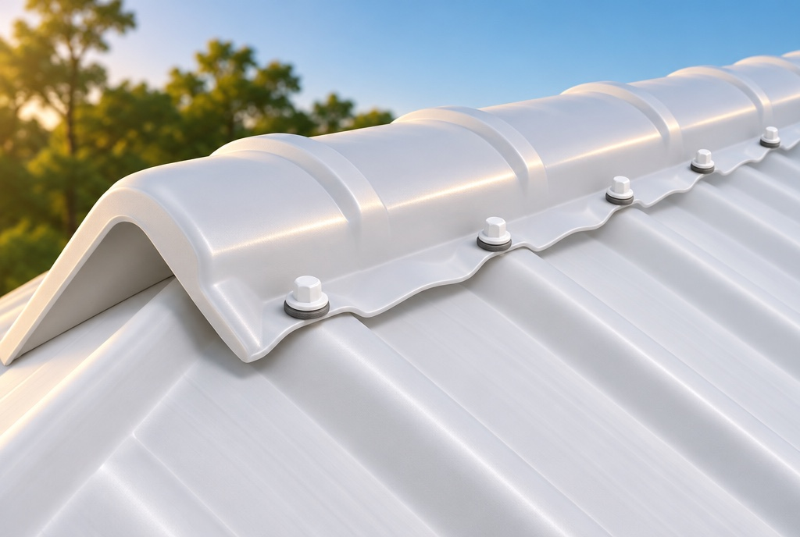
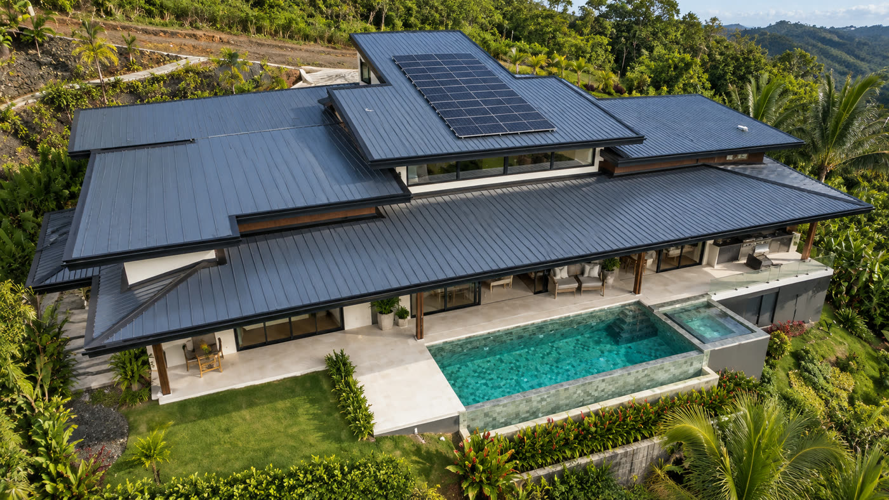
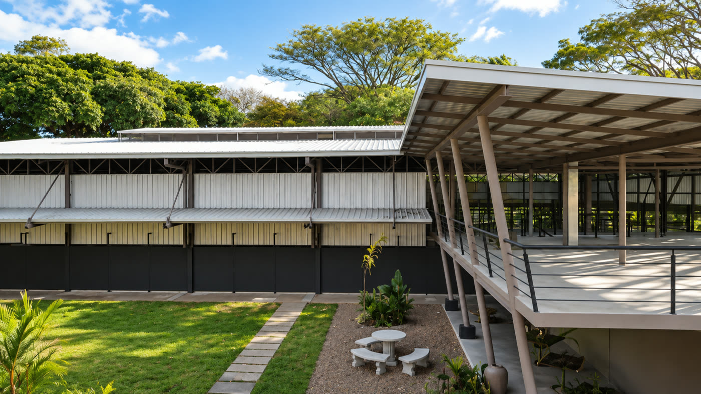
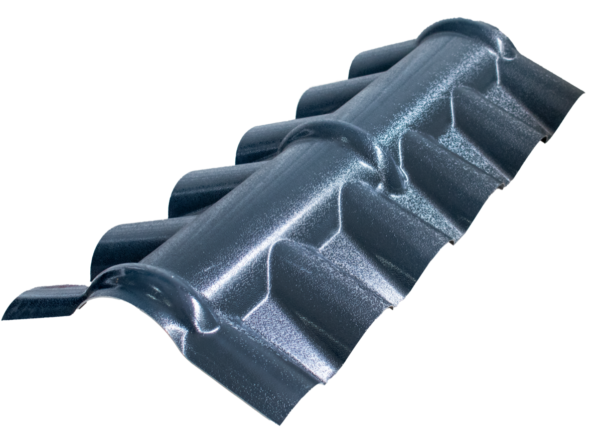
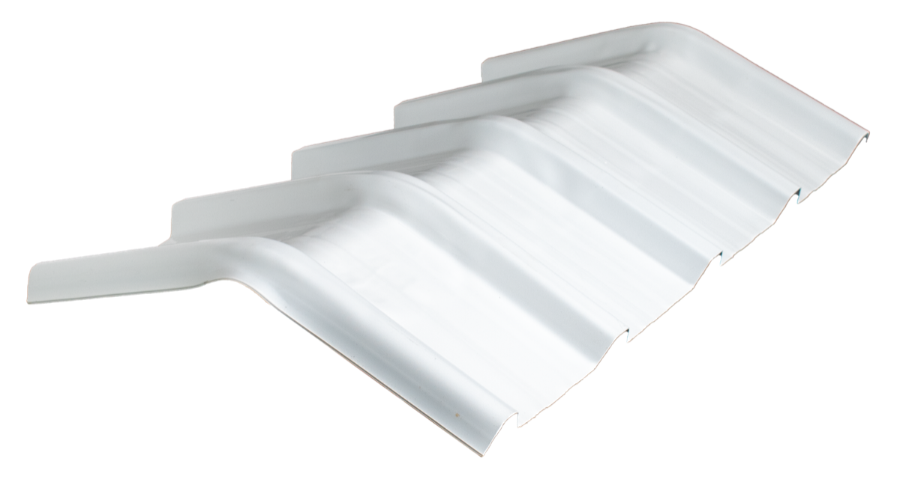
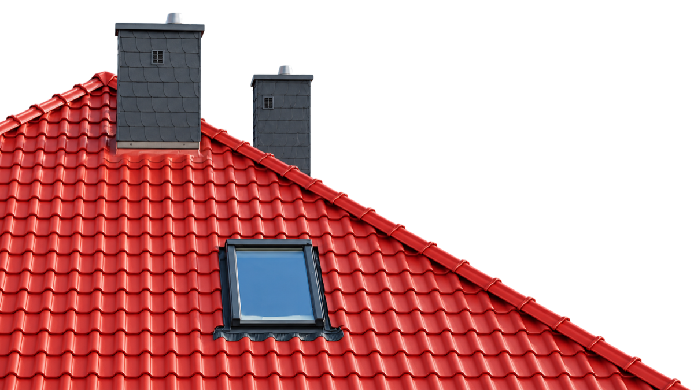
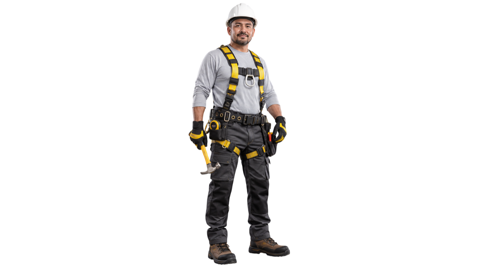

Una casa más fresca
Reducí drásticamente la temperatura interna de tu hogar. Nuestros paneles reflejan el calor solar, disminuyendo la dependencia del aire acondicionado y creando ambientes más confortables.


En Ultra Techos te ayudamos a elegir el techo ideal para tu hogar, combinando aislamiento térmico superior con durabilidad estructural comprobada.
Beneficios clave
Nuestros techos termoacústicos están diseñados con polímeros de alta ingeniería para resistir las condiciones climáticas más exigentes, garantizando confort interior y protección duradera para tu inversión inmobiliaria.
Reducí drásticamente la temperatura interna de tu hogar. Nuestros paneles reflejan el calor solar, disminuyendo la dependencia del aire acondicionado y creando ambientes más confortables.
Olvidate del óxido y el mantenimiento constante. Los materiales de alta tecnología repelen la humedad y resisten ambientes salinos, prolongando la vida útil estructural.
Disminuí significativamente el ruido de lluvia intensa y factores externos. El núcleo termoacústico actúa como barrera sonora para espacios residenciales tranquilos.
En Ultra Techos te ayudamos a elegir una solución de techo que combine confort, durabilidad y facilidad de instalación, de acuerdo con las necesidades de tu proyecto y las condiciones del lugar donde se encuentra.
Nuestros techos termoacústicos ayudan a reducir la transferencia de calor y a disminuir el ruido de la lluvia.
Nuestras soluciones están diseñadas para ambientes exigentes, con resistencia a la humedad y al salitre.

Sistemas pensados para calor intenso, lluvias, humedad y alta exposición solar.

Instalación sencilla y menos mantenimiento para una obra ágil y un techo confiable por más tiempo.

Te ayudamos a elegir el techo ideal según tu proyecto, ubicación, presupuesto y necesidades.
Materiales, accesorios, transporte e instalación coordinados para reducir errores en cada etapa.

Soporte técnico antes, durante y después de tu compra, con recomendaciones para una instalación segura.
Catálogo
Soluciones de techo, iluminación natural, aislamiento térmico y accesorios para proyectos residenciales, comerciales e industriales. En Ultra Techos contamos con diferentes tecnologías para adaptarnos a las necesidades de cada proyecto, clima y tipo de construcción.

 Industrial / Comercial
Industrial / ComercialTecho termoacústico en polímeros para proyectos residenciales, comerciales e industriales.
Panel estructural en polímeros con cinco crestas, diseñado como una alternativa moderna a las cubiertas metálicas y de fibrocemento. Ayuda a reducir el calor y el ruido de la lluvia, es 100% resistente a la corrosión, de bajo mantenimiento y fácil de instalar.
Ideal para:
viviendas, comercios, bodegas, proyectos industriales y zonas con alta humedad o exposición al salitre.

 Iluminación Natural
Iluminación NaturalPanel translúcido de 1,5 mm diseñado con la misma geometría de Ultra 35, permitiendo combinar ambos productos dentro de una misma cubierta. Facilita el ingreso de luz natural durante el día, ayudando a disminuir la necesidad de iluminación artificial en determinados espacios.
Ideal para:
Bodegas, naves industriales, talleres, supermercados y áreas donde se busca aprovechar mejor la luz natural.
 Residencial Premium
Residencial PremiumLa apariencia de la teja tradicional con los beneficios de los polímeros. Una solución de techo que reproduce la estética de la teja de barro y ofrece las ventajas de una cubierta en polímeros: resistencia a la corrosión, bajo mantenimiento y mayor confort termoacústico. Permite conservar una apariencia tradicional sin depender de una cubierta metálica convencional.
Ideal para:
Viviendas, hoteles, iglesias, terrazas, restaurantes y proyectos donde la estética arquitectónica es especialmente importante.
 Instalación
InstalaciónLa belleza natural de la palma con la durabilidad de una solución moderna. Ultra Palma permite crear techos y revestimientos de apariencia tropical sin depender de la palma natural, reproduciendo la textura y el volumen de la palma, con menor mantenimiento. Disponible en dos versiones: Protect, con protección adicional frente al ingreso de agua, y Deco, para revestimientos decorativos.
Ideal para:
Hoteles, resorts, restaurantes, palapas, ranchos, casas de playa, pérgolas, terrazas y proyectos de arquitectura tropical.
 Instalación
InstalaciónUltra Therm es un panel sándwich termoacústico compuesto por dos láminas de aluminio prelacado y un núcleo de espuma rígida de poliuretano de alta densidad. Su construcción combina alto aislamiento térmico y acústico, resistencia estructural, durabilidad y excelente apariencia. La utilización de aluminio aporta además una excelente resistencia frente a la corrosión.
Ideal para:
viviendas de alto desempeño, comercios, hoteles, proyectos industriales y construcciones donde el aislamiento térmico es una prioridad.
 Instalación
InstalaciónAislante térmico compuesto por una capa reflectiva de aluminio y un núcleo de espuma de polietileno expandida EPE de célula cerrada, diseñado para ayudar a reducir la transferencia de calor hacia el interior de edificaciones.
Su combinación de 95–97 % de reflectividad, baja emisividad y 10 mm de espesor lo convierte en una solución práctica para complementar sistemas de techado y cerramiento en viviendas, comercios, bodegas y proyectos donde se busca mejorar el confort térmico.

InstalaciónLínea completa de accesorios para instalación profesional: cumbreras, botaguas lisos, botaguas acanalados, limatesas, sets de fijación y más.
Ideal para:
Instalaciones nuevas, ampliaciones, remodelaciones y proyectos que requieren una solución completa de techado.
Aplicaciones reales de nuestros sistemas termoacústicos.

Ultra Therm

Ultra 35

Ultra 35 en cubierta curva
Guanacaste · Residencial
Ultra 35 en cubierta curva
Testimonios
Arquitectos, instaladores y familias de todo el país: el mismo techo, sin óxido y sin ruido.
Techos que ya protegen casas, hoteles y bodegas en todo el país
Ver reseñas“Quedé muy agradecido con Juan Pablo y Jorge por la solución a los inconvenientes que se presentaron. El producto es de muy buena calidad y la diferencia térmica es notablemente superior a cualquier otra solución del mercado. Sin duda los volvería a escoger.”
 Ver video
Ver video
“Lo recomiendo especialmente en zonas costeras y húmedas, porque no se oxida.”
“Son una empresa pequeña pero en crecimiento, han sido responsables, se les ha pagado los materiales por adelantado, varios millones y han cumplido bien. No todo ha sido perfecto pero han podido resolver. Así que hagan negocio con confianza.”

Arquitecta
14 años en construcción · Video · Expo Ultra Techos 2026
“Excelente servicio.”
Ultratechos
En Ultra Techos acompañamos cada proyecto más allá del suministro de materiales. Ponemos a tu disposición soluciones de alto desempeño, inventario disponible, logística y soporte técnico para facilitar la ejecución de proyectos residenciales, comerciales e industriales.
Ofrecemos cubiertas y techos en polímeros de última generación, desarrollados para brindar confort, durabilidad y resistencia en distintos tipos de proyecto. Nuestros sistemas son ligeros, fáciles de manipular y permiten una instalación más ágil y eficiente frente a soluciones tradicionales.

Disponemos de diferentes largos de lámina para optimizar cada cubierta, reducir traslapes y facilitar la instalación. Además, ofrecemos corte de láminas a medida, de acuerdo con las dimensiones y requerimientos específicos de cada proyecto. Esto permite aprovechar mejor el material, reducir desperdicios y lograr instalaciones más limpias y eficientes.

Mantenemos un amplio inventario de productos para techos, lo que nos permite atender proyectos con mayor agilidad y reducir significativamente los tiempos de espera asociados a materiales disponibles únicamente bajo pedido. Contar con producto disponible ayuda a nuestros clientes a mantener el avance de sus obras, planificar mejor las entregas y reducir atrasos en la ejecución del proyecto.

Coordinamos la entrega de materiales para techos en cualquier punto de Costa Rica y brindamos capacitación a instaladores sobre el manejo y la correcta instalación de nuestros sistemas. Nuestro equipo también ofrece acompañamiento técnico en obra, ayudando a resolver dudas, reducir errores durante la instalación y lograr el mejor desempeño posible de cada cubierta.

Cotización directa
Completá el formulario para que uno de nuestros ingenieros especialistas evalúe tus requerimientos y te proponga la configuración óptima en materiales, cortes y logística.
Respuesta en menos de 24 horas hábiles.
Costa Rica